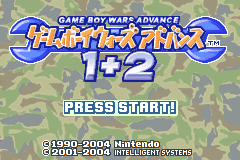

Game Boy Wars Advance 1+2 (Japan) (Virtual Console)
Flash 1M gbakit Built-In 💾 MultiBoot 🎮 4P Link
Cartridge Identity
- Game Code
BGWJ(FamilyBGW)- Header Title
GBWARS1+2- Maker / Revision
01/ rev0- ROM Size
- 16.0 MiB (16,777,216 B)
- Save Media
Flash 1M- SHA-256
47316666c9d9d83ecd60b24e29600160fcf3a5f76855079a5dd4bb3b6ddd8f9f- Engine / SDK Group
comm-009(51 families)
Screenshots


Link Cable & Multiplayer Communications
This title contains detected communication capabilities: 💾 MultiBoot 🎮 4P Link.
Detailed protocol specifications, SIO registers, Joybus commands, and MultiBoot sequences are documented in the Link & Multiplayer Reference.
- Multi-Player SIO (4P)
- 16-bit ring network · SIOCNT (
0x04000128) literals:0x32ef74,0x32f028,0x32f084· SIODATA32/SIOMULTI0 (0x04000120) literals:0x32f2dc,0x3639ec,0x363a50 - Single-Cart MultiBoot
- Single-Cartridge MultiBoot (Download Play) client/server handler · Thumb SWI 0x25 (
0xDF25):0x020c16,0x0fd666,0x104472,0x127396
Battery Save Support in gbakit
Built-in definition (BGWJ)
gbakit save verify BGWJ save.sav
gbakit save decode BGWJ save.sav
gbakit save fix BGWJ damaged.sav -o repaired.savROM Assets, Compression & Audio
- BIOS Compression
- LZ77 (
0x10): 2,097 streams · RLE (0x30): 52 streams - ROM Pointer Tables
- 340 tables (49 pointing to validated compressed streams)
- SDK Backup Tags
FLASH1M_V102,FLASH1M_V102,FLASH1M_V102
Asset Map (formatkit.asset-map.v1)
Download BGWJ-r0-a8ad7c7d2a48b4ce.asset-map.json.gz (296,932 B (290.0 KiB)) Verified PASS · 14.81% coverage
| Metric | Bytes / Value | Entries |
|---|---|---|
| Identified | 2,365,986 B (2.26 MiB) (14.10%) | 2,901 |
| Mapped | 0 B (0.00%) | 0 |
| Opaque | 118,640 B (115.9 KiB) (0.71%) | 1 |
| Unknown | 14,292,590 B (13.63 MiB) (85.19%) | 2,332 |
| Total ROM Size | 16,777,216 B (16.00 MiB) | 5,234 |
| Coverage % | 14.81% | — |
| Entries w/ Code Refs | 3,010 / 5,234 (57.51%) | — |
Top Identified Formats: compress.bios-lz77 (1,415 · 2,109,966 B (2.01 MiB)) · gfx.gba-palette (1,457 · 125,344 B (122.4 KiB)) · rom.multiboot (3 · 70,516 B (68.9 KiB)) · compress.bios-rle (24 · 55,928 B (54.6 KiB)) · audio.m4a-song-table (1 · 4,040 B (3.9 KiB)) · gba.rom-header (1 · 192 B)
Largest unknown Extents (Headerless / Custom Asset Candidates)
| Offset | Size | Shannon Entropy | Code Refs |
|---|---|---|---|
0x00BE59E7 | 3,007,737 B (2.87 MiB) | 6.760 bits/B | 0 |
0x00EC6374 | 1,166,620 B (1.11 MiB) | 1.997 bits/B | 2 |
0x00A3C12C | 803,072 B (784.2 KiB) | 0.075 bits/B | 0 |
0x0027FB64 | 526,904 B (514.6 KiB) | 0.052 bits/B | 0 |
0x0090DC7C | 448,196 B (437.7 KiB) | 6.914 bits/B | 1 |
gzip -dk BGWJ-r0-a8ad7c7d2a48b4ce.asset-map.json.gz && gbakit map verify rom.gba BGWJ-r0-a8ad7c7d2a48b4ce.asset-map.json
gbakit assets export rom.gba --asset-map BGWJ-r0-a8ad7c7d2a48b4ce.asset-map.json -o out/Text, Fonts & Scene Data
- Primary Text Encoding
- LZ77-compressed ASCII (
4ASCII strings ·200Shift-JIS runs ·4LZ77 ASCII blocks) - Font & VWF Indicators
- VWF Width Table 1bpp Font · BIOS SWIs: BitUnPack
0x10:19· LZ770x11/12:31· Huffman0x13:16· RLE0x14/15:35 - Scene & Packaging
88ROM pointer tables (≥32 entries,7≥200) ·1relativeu32TOCs ·170OAM metasprite hits
Hardware MMIO Subsystems
ppu_display0x8001ad4,0x8006038
Regional Variants & Revisions (Family BGW)
- Game Boy Wars Advance 1+2 (Japan) (
BGWJ, 16 MiB)